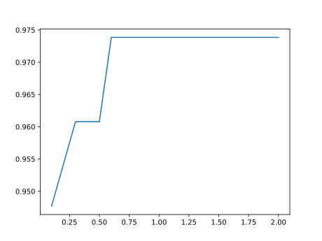

Quick start guide
Quick Example
Let's build a classifier for the classic iris dataset. If you don't have RDatasets, Pkg.add it.
julia> using RDatasets: dataset
julia> iris = dataset("datasets", "iris")
150×5 DataFrames.DataFrame
│ Row │ SepalLength │ SepalWidth │ PetalLength │ PetalWidth │ Species │
│ │ Float64 │ Float64 │ Float64 │ Float64 │ Cat… │
├─────┼─────────────┼────────────┼─────────────┼────────────┼───────────┤
│ 1 │ 5.1 │ 3.5 │ 1.4 │ 0.2 │ setosa │
│ 2 │ 4.9 │ 3.0 │ 1.4 │ 0.2 │ setosa │
│ 3 │ 4.7 │ 3.2 │ 1.3 │ 0.2 │ setosa │
│ 4 │ 4.6 │ 3.1 │ 1.5 │ 0.2 │ setosa │
│ 5 │ 5.0 │ 3.6 │ 1.4 │ 0.2 │ setosa │
│ 6 │ 5.4 │ 3.9 │ 1.7 │ 0.4 │ setosa │
│ 7 │ 4.6 │ 3.4 │ 1.4 │ 0.3 │ setosa │
⋮
│ 143 │ 5.8 │ 2.7 │ 5.1 │ 1.9 │ virginica │
│ 144 │ 6.8 │ 3.2 │ 5.9 │ 2.3 │ virginica │
│ 145 │ 6.7 │ 3.3 │ 5.7 │ 2.5 │ virginica │
│ 146 │ 6.7 │ 3.0 │ 5.2 │ 2.3 │ virginica │
│ 147 │ 6.3 │ 2.5 │ 5.0 │ 1.9 │ virginica │
│ 148 │ 6.5 │ 3.0 │ 5.2 │ 2.0 │ virginica │
│ 149 │ 6.2 │ 3.4 │ 5.4 │ 2.3 │ virginica │
│ 150 │ 5.9 │ 3.0 │ 5.1 │ 1.8 │ virginica │
ScikitLearn.jl expects arrays, but DataFrames can also be used - see the corresponding section of the manual
julia> X = convert(Array, iris[!, [:SepalLength, :SepalWidth, :PetalLength, :PetalWidth]]) #subset of original data not a copy
150×4 Array{Float64,2}:
5.1 3.5 1.4 0.2
4.9 3.0 1.4 0.2
4.7 3.2 1.3 0.2
4.6 3.1 1.5 0.2
5.0 3.6 1.4 0.2
5.4 3.9 1.7 0.4
4.6 3.4 1.4 0.3
5.0 3.4 1.5 0.2
4.4 2.9 1.4 0.2
4.9 3.1 1.5 0.1
⋮
6.9 3.1 5.1 2.3
5.8 2.7 5.1 1.9
6.8 3.2 5.9 2.3
6.7 3.3 5.7 2.5
6.7 3.0 5.2 2.3
6.3 2.5 5.0 1.9
6.5 3.0 5.2 2.0
6.2 3.4 5.4 2.3
5.9 3.0 5.1 1.8
julia> y = convert(Array, iris[!, :Species])
150-element Array{String,1}:
"setosa"
"setosa"
"setosa"
"setosa"
"setosa"
"setosa"
"setosa"
"setosa"
"setosa"
"setosa"
⋮
"virginica"
"virginica"
"virginica"
"virginica"
"virginica"
"virginica"
"virginica"
"virginica"
"virginica"
Next, we load the LogisticRegression model from scikit-learn's library. This would require scikit-learn. See Installation
julia> using ScikitLearn
julia> @sk_import linear_model: LogisticRegression
PyObject <class 'sklearn.linear_model._logistic.LogisticRegression'>Every model's constructor accepts hyperparameters (such as regression strength, whether to fit the intercept, the penalty type, etc.) as keyword arguments. Check out ?LogisticRegression for details.
julia> model = LogisticRegression(fit_intercept=true, max_iter = 200)
PyObject LogisticRegression(C=1.0, class_weight=None, dual=False, fit_intercept=True,
intercept_scaling=1, l1_ratio=None, max_iter=200,
multi_class='auto', n_jobs=None, penalty='l2',
random_state=None, solver='lbfgs', tol=0.0001, verbose=0,
warm_start=False)
Then we train the model and evaluate its accuracy on the training set:
julia> fit!(model, X, y);
julia> accuracy = score(model, X, y)
0.9733333333333334
julia> println("accuracy: $accuracy")
accuracy: 0.9733333333333334
Cross-validation
This will train five models, on five train/test splits of X and y, and return the test-set accuracy of each:
julia> using ScikitLearn.CrossValidation: cross_val_score
julia> cross_val_score(LogisticRegression(max_iter=130), X, y; cv=5) # 5-fold
5-element Array{Float64,1}:
0.9666666666666667
1.0
0.9333333333333333
0.9666666666666667
1.0
See this tutorial for more information.
Hyperparameter tuning
LogisticRegression has a regularization-strength parameter C (smaller is stronger). We can use grid search algorithms to find the optimal C.
GridSearchCV will try all values of C in 0.1:0.1:2.0 and will return the one with the highest cross-validation performance.
julia> using ScikitLearn.GridSearch: GridSearchCV
julia> gridsearch = GridSearchCV(LogisticRegression(max_iter=200), Dict(:C => 0.1:0.1:2.0))
GridSearchCV
estimator: PyCall.PyObject
param_grid: Dict{Symbol,StepRangeLen{Float64,Base.TwicePrecision{Float64},Base.TwicePrecision{Float64}}}
scoring: Nothing nothing
loss_func: Nothing nothing
score_func: Nothing nothing
fit_params: Dict{Any,Any}
n_jobs: Int64 1
iid: Bool true
refit: Bool true
cv: Nothing nothing
verbose: Int64 0
error_score: String "raise"
scorer_: Nothing nothing
best_params_: Nothing nothing
best_score_: Nothing nothing
grid_scores_: Nothing nothing
best_estimator_: Nothing nothing
julia> fit!(gridsearch, X, y);
julia> println("Best parameters: $(gridsearch.best_params_)")
Best parameters: Dict{Symbol,Any}(:C => 0.6)
Finally, we plot cross-validation accuracy vs. C
julia> using PyPlot, Statistics
julia> plot([cv_res.parameters[:C] for cv_res in gridsearch.grid_scores_],
[mean(cv_res.cv_validation_scores) for cv_res in gridsearch.grid_scores_])
1-element Array{PyCall.PyObject,1}:
PyObject <matplotlib.lines.Line2D object at 0x7f735a4b5490>
Saving the model to disk
Both Python and Julia models can be saved to disk
julia> import JLD, PyCallJLD
julia> JLD.save("my_model.jld", "model", model)
julia> model = JLD.load("my_model.jld", "model") # Load it back
┌ Warning: type PyCallJLD.PyObjectSerialization not present in workspace; reconstructing
└ @ JLD ~/.julia/packages/JLD/uVJmd/src/jld_types.jl:722
getfield(JLD, Symbol("##PyCallJLD.PyObjectSerialization#371"))(UInt8[0x80, 0x03, 0x63, 0x73, 0x6b, 0x6c, 0x65, 0x61, 0x72, 0x6e … 0x2e, 0x32, 0x32, 0x2e, 0x31, 0x71, 0x43, 0x75, 0x62, 0x2e])